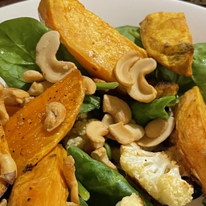

Veg Salad
Sweet salad. Veggies get sweet when roasted. Good when you have
heartburn. Except maybe the olive oil could be bad, but maybe
avoidable using air fryer?
Shop
Half a cauliflower
One sweet potato
Spinach or arugula
Cashews or walnuts
Salt
Pepper
Cut erverything to even pieces
Put on baking sheet
Cover in olive oil
Add salt and pepper
Mix well, spread out evenly
Bake at 425 for 25 min
Add nuts and greens